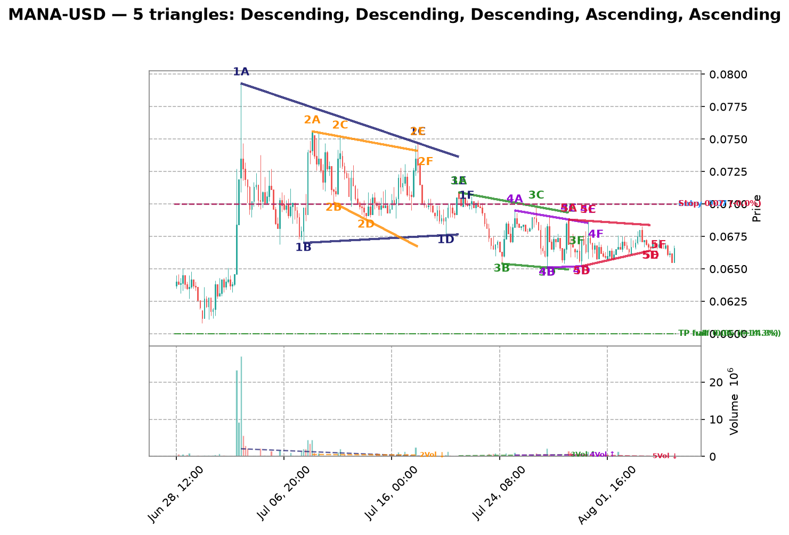
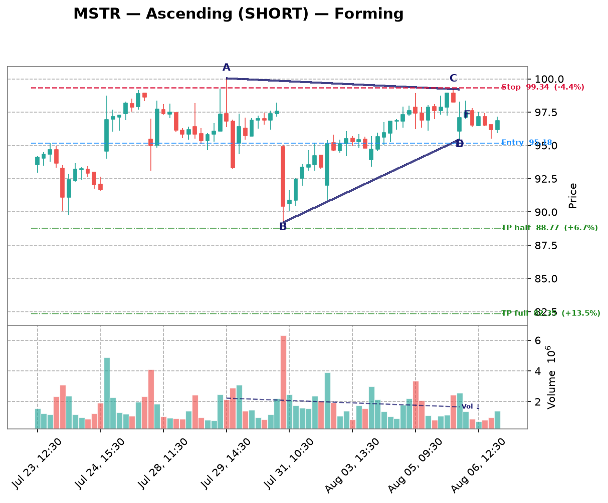
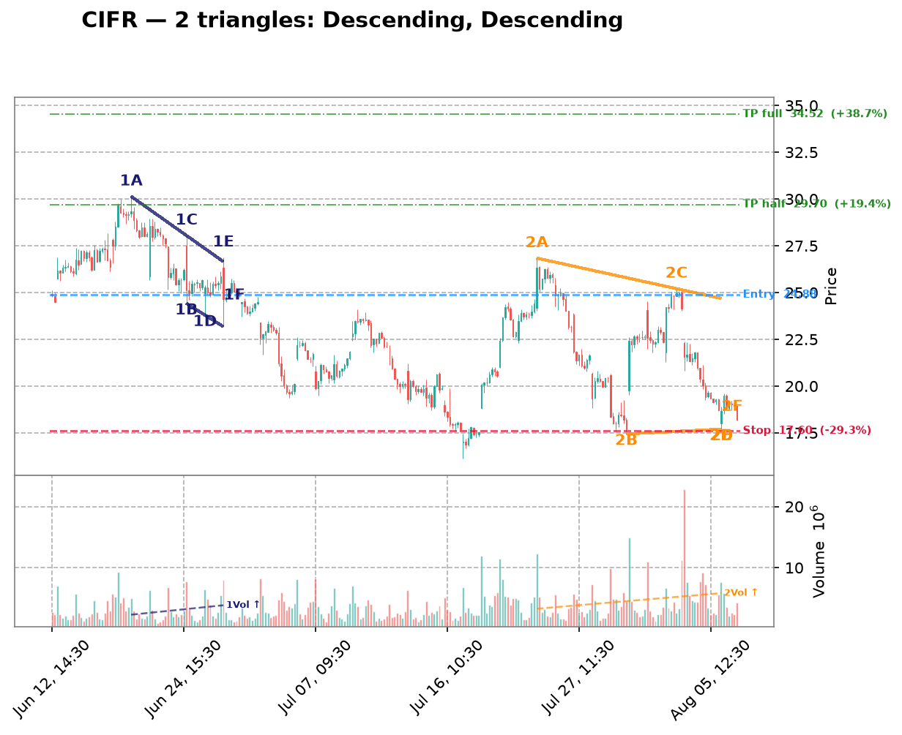
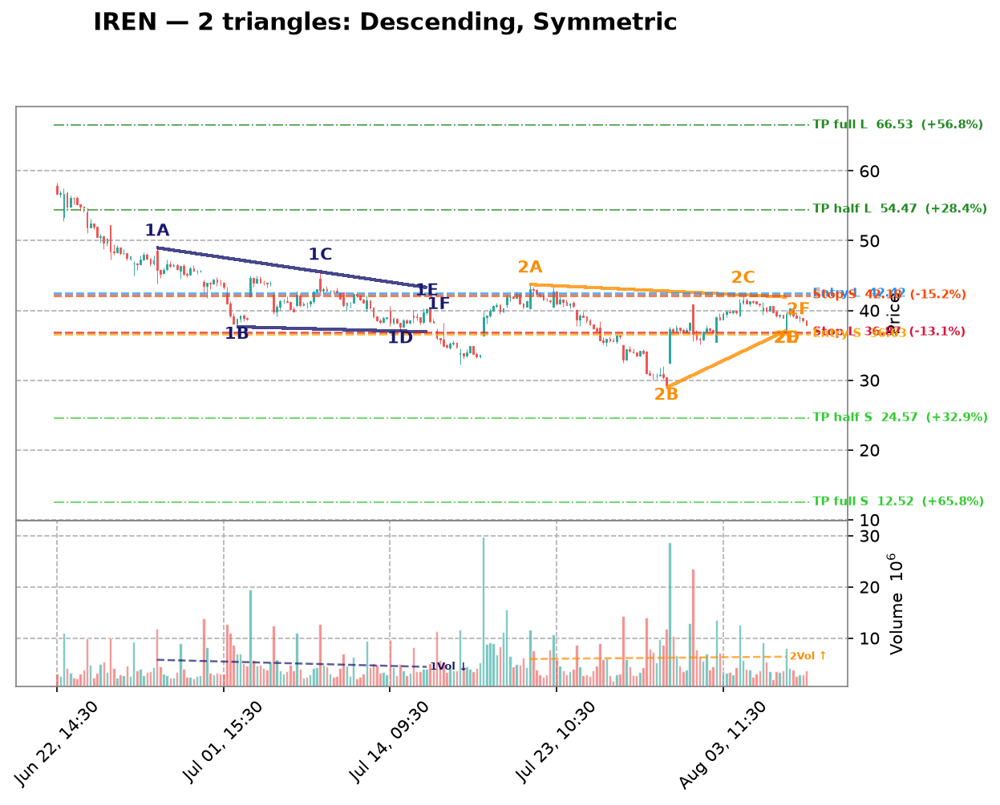
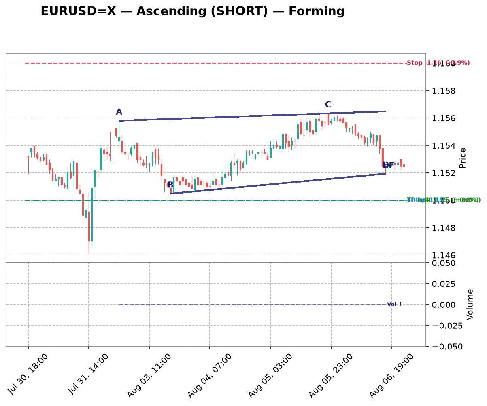
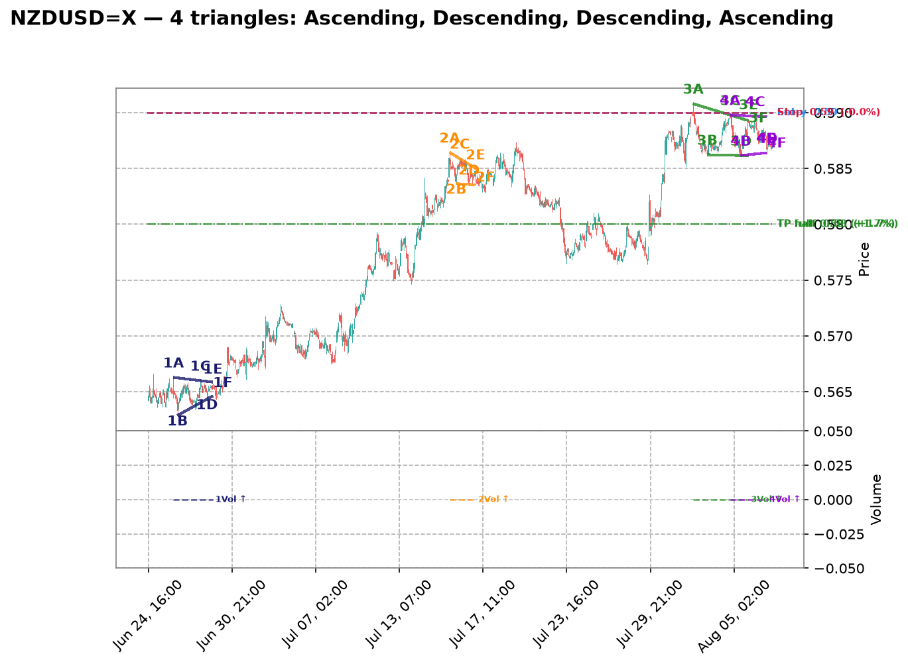
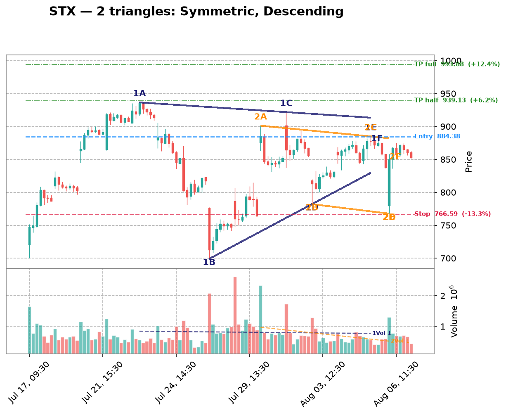
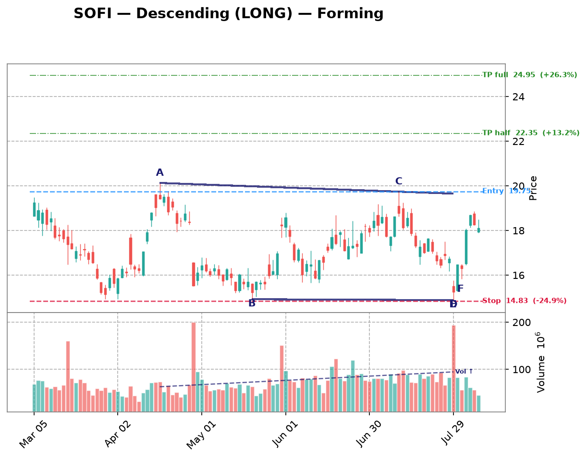

| Date | Symbol | TF | Pattern | Dir | Verdict | Claude Pattern | Claude Dir | Conf | Rec |
|---|---|---|---|---|---|---|---|---|---|
| crypto 10 patterns | |||||||||
| 2026-08-10 | DOGE-USD | 1d | Descending | LONG | Disputed | ? | ? | Certainty: 78 | — |
Chart  Claude Notes The right edge of the chart (Jun-Aug) shows a steady downtrend into a flattening, low-volatility zone around 0.070-0.075, but there's no clear converging structure - it's more of a flat consolidation/basing pattern after a strong downtrend, not a descending triangle. Highs from late Jun through Aug are roughly flat (~0.075-0.078) rather than declining, and the lows are also roughly flat (~0.068-0.070), so neither trendline shows the required slope to form a proper descending triangle (which needs a flat support + declining resistance). This looks more like a rectangle/flag or basing structure. Volume has also contracted significantly, consistent with consolidation rather than an active triangle breakout setup. I disagree with the algorithm's descending triangle flag - the resistance line isn't clearly declining, it's mostly flat, and the pattern lacks the clean converging touches needed for a triangle. Presence certainty 78/100 — how sure Claude is that its found/not-found call is correct | |||||||||
| 2026-08-10 | VET-USD | 1d | Descending | LONG | Disputed | ? | ? | Certainty: 75 | — |
Chart  Claude Notes The right side of the chart (late June through August) shows price consolidating in a tight, roughly flat range between ~0.0045 and ~0.0050 with no clear converging trendlines - both highs and lows are essentially flat, not narrowing. This looks more like a flat consolidation/rectangle after a steep downtrend than a descending triangle. A descending triangle requires a clearly falling upper resistance line with a flat support; here the upper boundary isn't making consistently lower highs, it's oscillating sideways. I disagree with the algorithm's flag - there's insufficient evidence of converging trendlines, just range-bound chop at the bottom of a prior downtrend. Presence certainty 75/100 — how sure Claude is that its found/not-found call is correct | |||||||||
| 2026-08-10 | XRP-USD | 1d | Descending | LONG | Disputed | ? | ? | Certainty: 75 | — |
Chart  Claude Notes The right-side price action (Jun-Aug) is a tight, roughly flat consolidation between ~1.00-1.15, not a converging triangle. Both the highs and lows are essentially flat/horizontal rather than one line sloping down into a narrowing apex - this looks more like a rectangular/range-bound consolidation than a descending triangle. There's no clear series of lower highs compressing toward a flat support; instead price has been oscillating sideways in a narrow band for ~7 weeks with similar highs and lows throughout. The algorithm likely mistook the overall downtrend from Jan-Jun (which does show a big descending staircase) as triangle convergence, but that's a broad downtrend, not a symmetric narrowing pattern with clear trendline touches converging to an apex on the right edge. I don't see 2+ genuine touches on a falling resistance line converging with a flat support line near the current right edge. Presence certainty 75/100 — how sure Claude is that its found/not-found call is correct | |||||||||
| 2026-08-10 | ETH-USD | 1d | Symmetric | SYMMETRIC | Disputed | ? | ? | Certainty: 68 | — |
Chart  Claude Notes The right-side price action (mid-June through late July) shows a recovery from ~1600 up to a range around 1800-1950, followed by a tight sideways consolidation, but this looks more like a flat/rectangular consolidation than a converging triangle. The highs (~1950) are roughly flat rather than descending, and the lows (~1830-1850) are also roughly flat rather than clearly ascending in a converging manner - there's no clear apex point being approached. Price is basically oscillating in a narrow horizontal band rather than compressing into a wedge. The algorithm's symmetric triangle call is weak because both boundary lines look nearly parallel/flat rather than converging with distinct touch points on each side. I don't see 2+ clean touches on a rising lower line and 2+ on a falling upper line converging toward an apex - it reads more as consolidation/range than a triangle. Presence certainty 68/100 — how sure Claude is that its found/not-found call is correct | |||||||||
| 2026-08-10 | SOL-USD | 1d | Symmetric | SYMMETRIC | Not reviewed | ? | ? | — | — |
Chart  | |||||||||
| 2026-08-10 | MANA-USD | 4h | Ascending | SHORT | Disputed | ? | ? | Certainty: 82 | — |
Chart  Claude Notes The right side of the chart (late July into early August) shows a choppy, range-bound consolidation between roughly 0.0655 and 0.0685, but there's no clear convergence of trendlines. Highs and lows are both roughly flat/oscillating rather than one line rising and another flat, which would be needed for an ascending triangle. There's no series of higher lows compressing against a flat resistance - instead price is drifting sideways/slightly down with noisy wicks on both sides. The algorithm's ascending triangle call doesn't hold up: the 'support' isn't rising in a clean stepwise fashion, and the top isn't acting as consistent resistance either. This looks more like a rangebound/no-pattern zone than a genuine converging triangle near the apex. Presence certainty 82/100 — how sure Claude is that its found/not-found call is correct | |||||||||
| 2026-08-10 | SAND-USD | 4h | Descending | LONG | Disputed | ? | ? | Certainty: 75 | — |
Chart  Claude Notes The right side of the chart shows a flat, choppy consolidation around 0.0410-0.0435 with no clear converging trendlines. Highs and lows are roughly parallel/flat rather than converging - there's no descending upper trendline (highs are fairly level, not making consistent lower highs) and the lows are also flat rather than rising. This looks more like a horizontal range/consolidation than a triangle. The algorithm's descending triangle call is not well supported since a descending triangle needs a clearly falling upper resistance line with 3+ touches, which isn't visible here - the price action after the volume spike around Jul 30 is essentially sideways chop. Presence certainty 75/100 — how sure Claude is that its found/not-found call is correct | |||||||||
| 2026-08-10 | XLM-USD | 3h | Descending | LONG | Disputed | ? | ? | Certainty: 85 | — |
Chart  Claude Notes The right side of the chart shows a clear, steady downtrend with lower highs and lower lows from ~Jul 27 through early August, with no flattening or convergence structure. There's no rising support line - lows keep dropping (0.175 to 0.170 to 0.165 to 0.160), and highs are also declining, not flat. This is a persistent downtrend/channel, not a converging triangle. The algorithm's 'ascending triangle' flag doesn't hold up: an ascending triangle requires a flat resistance ceiling with rising lows, but here both boundaries are sloping downward together (parallel-ish decline) rather than converging into an apex. No compression or apex point is visible near the right edge - price is simply trending down with minor consolidation bumps (e.g., around Aug 2) that get quickly rejected. I disagree with the algorithmic flag. Presence certainty 85/100 — how sure Claude is that its found/not-found call is correct | |||||||||
| 2026-08-10 | VET-USD | 3h | Ascending | SHORT | Disputed | ? | ? | Certainty: 78 | — |
Chart  Claude Notes The right side of the chart shows a choppy range-bound consolidation between roughly 0.00465 and 0.00475, with no clear converging trendlines. Highs are relatively flat (not descending), and lows are also flat to slightly declining (not rising), so this looks more like a rectangle/consolidation than an ascending triangle. There's no clear series of higher lows converging into a flat resistance - the recent candles (Aug 5) actually show lower lows and lower highs, which contradicts the ascending triangle setup the algorithm flagged. I don't see credible multi-touch convergence toward an apex near the right edge, so I disagree with the algorithmic flag. Presence certainty 78/100 — how sure Claude is that its found/not-found call is correct | |||||||||
| 2026-08-10 | ETC-USD | 3h | Descending | LONG | Disputed | ? | ? | Certainty: 78 | — |
Chart  Claude Notes The chart shows a clear downtrend from early July (~7.4) to early August (~6.4-6.6) with lower highs and lower lows throughout - this is a descending price channel/downtrend, not a converging triangle. Near the right edge, price has flattened somewhat around 6.4-6.6, but there's no clear rising support line - lows are roughly flat or slightly declining (6.55, 6.45, 6.35, 6.5), and highs are also flat (6.6-6.65), suggesting more of a consolidation/rectangle than a converging descending triangle. The algorithm's flag as 'Descending' with LONG direction is contradictory - descending triangles are typically bearish/SHORT continuation patterns, not LONG setups. The recent price action lacks the clear lower-high sequence needed for a proper descending triangle upper trendline; it looks more like the downtrend is losing momentum and consolidating sideways near the lows rather than forming a defined triangle with two converging trendlines with multiple clean touches. Presence certainty 78/100 — how sure Claude is that its found/not-found call is correct | |||||||||
| crypto-equity 5 patterns | |||||||||
| 2026-08-10 | MSTR | 3h | Descending | LONG | Disputed | ? | ? | Certainty: 68 | — |
Chart  Claude Notes Since early July price has been oscillating in a fairly flat range between roughly 92-93 support and 98-100 resistance, without a clear narrowing of the range toward the right edge. Highs are not consistently declining (e.g. Jul20-23 pushed back to ~102) and lows are not consistently rising - this looks more like a rangebound/consolidation channel than a converging descending triangle. There's no clear apex forming near the right edge; recent candles (Aug) are still trading in the middle of the established range around 96-98, not compressing. I don't see the lower-high sequence needed for a credible descending triangle, so I disagree with the algorithm's flag. Presence certainty 68/100 — how sure Claude is that its found/not-found call is correct | |||||||||
| 2026-08-09 | MSTR | 1h | Ascending | SHORT | Disputed | ? | ? | Certainty: 78 | — |
Chart  Claude Notes The right-side price action (late Aug 5 into Aug 6) shows a decline from ~99 to ~96.5 with lower highs and lower lows together — this looks like a mild downtrend/pullback rather than a converging triangle with a rising support line. There's no clear rising trendline of higher lows; instead both highs and lows are declining in tandem, more consistent with a small descending channel or simple retracement than an ascending triangle. No flat resistance line is visible either (highs are dropping from ~99 to ~97.5 to ~97). I don't see the two clearly converging trendlines required for a valid triangle at the right edge, so I disagree with the algorithm's ascending triangle / short flag. Presence certainty 78/100 — how sure Claude is that its found/not-found call is correct | |||||||||
| 2026-08-09 | CIFR | 1h | Descending | LONG | Disputed | ? | ? | Certainty: 78 | — |
Chart  Claude Notes The chart shows a series of large swing oscillations (roughly 26->18->24->17->26->18->25->18) rather than a converging structure. Each swing has similar amplitude, indicating a broad trading range/downtrend with volatility rather than a narrowing triangle. Near the right edge, price is declining from ~25 to ~18-19 with no flattening support line or clear lower highs converging into an apex - the recent candles show a steady downward slide, not compression. There is no consistent horizontal support with descending highs; the swings are too wide and repetitive to qualify as a descending triangle. I disagree with the algorithm's flag - this looks like continued range-bound/down-trending price action, not a triangle nearing apex. Presence certainty 78/100 — how sure Claude is that its found/not-found call is correct | |||||||||
| 2026-08-09 | MARA | 1h | Descending | LONG | Disputed | ? | ? | Certainty: 78 | — |
Chart  Claude Notes {
"found_triangle": false,
"pattern_type": null,
"direction": null,
"presence_confidence": 78,
"pattern_quality": null,
"notes": "The chart shows an overall downtrend with successive lower highs (15, 14, 13, 12.7, 12) and lower lows (12, 11.8, 10.7, 10, 10.7), forming a descending staircase rather than a converging triangle. There's no flat/horizontal support line - the lows are also declining, not holding at a consistent level. At the right edge, price is consolidating in a tight range around 10.7-12 but without clear evidence of a rising lower boundary or flat lower support meeting a descending upper trendline with 3+ touches each. This looks more like a broader downtrend with intermittent consolidation than a well-defined descending triangle. The algorithm's flag is plausible given the recent narrowing range, but the lower boundary isn't flat - it's still sloping down, making this more consistent with a bearish channel/flag than a classic descending triangle setup for a LONG bias, which would typically need a firm horizontal support.",
} Presence certainty 78/100 — how sure Claude is that its found/not-found call is correct | |||||||||
| 2026-08-09 | IREN | 1h | Symmetric | SYMMETRIC | Disputed | ? | ? | Certainty: 72 | — |
Chart  Claude Notes The chart shows a broad downtrend from late June (~57) into a choppy bottoming/ranging structure from mid-July through early August, oscillating between roughly 30 and 44 with multiple swing highs and lows of similar magnitude - more like a wide horizontal range than a converging wedge. Near the right edge (early August), price is bouncing between ~37-41 without clear narrowing of highs and lows; recent candles show similar range width to prior weeks rather than compression toward an apex. I don't see two clearly converging trendlines with consistent touch points - the swing highs (44, 43, 41) and lows (33, 30, 36) don't form a tight symmetric convergence, they look more like a rounded/ranging base. I disagree with the algorithmic flag; this looks more like consolidation/basing after a downtrend rather than a well-defined symmetric triangle. Presence certainty 72/100 — how sure Claude is that its found/not-found call is correct | |||||||||
| mega-cap 4 patterns | |||||||||
| 2026-08-10 | AMZN | 1d | Descending | LONG | Disputed | ? | ? | Certainty: 78 | — |
Chart  Claude Notes The right side of the chart shows a sharp rally from ~230 to ~287 followed by a pullback over just the last 5-6 candles (280→283→277→281→272). This is far too short a sequence to establish two converging trendlines with multiple touch points - there's only one lower high and one or two closes near a similar level, not a series of lower highs and flat lows. It looks more like a strong impulsive up-move now consolidating/retracing near its high, not a descending triangle. No clear flat support base with repeated touches, and no clear declining resistance line with 2-3 touches either. I'd characterize this as a post-breakout pullback/consolidation rather than a triangle formation. The algorithm likely mistook the last few red candles as a descending triangle top, but the sample size is too small and there's no established support line. Presence certainty 78/100 — how sure Claude is that its found/not-found call is correct | |||||||||
| 2026-08-10 | NVDA | 1d | Descending | LONG | Disputed | ? | ? | Certainty: 75 | — |
Chart  Claude Notes The chart shows a clear downtrend from mid-May peak (~230-235) into late July trough (~190), followed by a sharp V-shaped recovery over the last 5-6 candles (from ~190 to ~223). This is not a converging triangle - there's no flat support line with lower highs converging into it. The recent price action is a strong impulsive rally breaking above the prior consolidation range (200-215) with expanding, not contracting, volatility. There's no clear resistance line being tested repeatedly with lower highs - the recent candles are making higher highs and higher lows, which is the opposite of a descending triangle's compression pattern. The algorithm's flag appears to be a false positive, likely mistaking the overall downtrend structure for a descending triangle without recognizing the recent breakout invalidates any such consolidation pattern. Presence certainty 75/100 — how sure Claude is that its found/not-found call is correct | |||||||||
| 2026-08-10 | META | 1d | Descending | LONG | Disputed | ? | ? | Certainty: 72 | — |
Chart  Claude Notes The right-side price action from late July into early August shows a sharp drop to ~525 then a bounce, followed by choppy sideways action around 585-650 with no clear convergence. There's no consistent flat support line - lows are irregular (dip to 525, then higher lows near 585-590), and highs are also inconsistent (bounce to 650, pullback, minor bounce). This looks more like consolidation/chop after a downtrend rather than a well-defined descending triangle with a flat support and clear lower highs. I don't see at least two clean, well-spaced touches on a flat bottom trendline paired with a clearly descending upper trendline converging toward an apex. The algorithm's flag seems to be picking up on general downward drift plus recent basing, but the touch points are too loose/scattered to call this a credible triangle. Presence certainty 72/100 — how sure Claude is that its found/not-found call is correct | |||||||||
| 2026-08-10 | GOOGL | 4h | Ascending | SHORT | Disputed | ? | ? | Certainty: 85 | — |
Chart  Claude Notes The right side of the chart shows a strong uptrend from ~318 to a peak near 382, followed by a sharp pullback to ~357-365. This is not a converging triangle - there's no clear flat resistance being tested multiple times, nor a rising support line with multiple touches. Instead we see an impulsive rally followed by a single sharp reversal candle and consolidation. The algorithm likely misread the rising lows during the uptrend (Jul 22-Aug 5) as an ascending triangle support line, but there's no corresponding flat resistance - price kept making higher highs until the recent reversal. The last few candles show a drop and sideways chop, not a compression pattern with defined boundaries. This looks like a trend followed by a reversal/pullback, not a triangle formation. Presence certainty 85/100 — how sure Claude is that its found/not-found call is correct | |||||||||
| semiconductors 3 patterns | |||||||||
| 2026-08-10 | ADI | 4h | Descending | LONG | Disputed | ? | ? | Certainty: 72 | — |
Chart  Claude Notes Price shows a strong downtrend from late June through late July, bottoming around 355-360 in early August, then a modest bounce into the last few candles (~375-385). This looks more like a downtrend reversal/basing attempt than a converging triangle. There's no clear flat support line with a descending resistance line converging toward it - the lows form a rounded bottom rather than a consistent horizontal support, and the recent candles show sideways consolidation rather than a well-defined descending upper trendline with 3+ touches. The algorithm's descending triangle call is weak; the right-edge structure looks more like consolidation/basing after a downtrend, not a clean triangle with defined convergence and an apex forming. Presence certainty 72/100 — how sure Claude is that its found/not-found call is correct | |||||||||
| 2026-08-09 | LRCX | 1h | Ascending | SHORT | Disputed | ? | ? | Certainty: 72 | — |
Chart  Claude Notes The right-side price action (early Aug) shows a choppy range between roughly 305-320, but there's no clear ascending support line—lows are flat/noisy (around 305-308) rather than making distinct higher lows, and the highs are also roughly flat (~315-320) rather than converging. This looks more like a horizontal consolidation/rectangle than a true ascending triangle. The algorithm likely flagged minor higher-low bumps, but there aren't 2-3 clean touch points forming a rising trendline distinct from a flat one. Prior to this, price action from mid-July was a clear downtrend with lower highs/lower lows, not a triangle. Given the ambiguity of the recent consolidation, I lean toward rejecting the triangle call, though a loose case for a shallow ascending structure isn't impossible. Presence certainty 72/100 — how sure Claude is that its found/not-found call is correct | |||||||||
| 2026-08-09 | AMAT | 1h | Symmetric | SYMMETRIC | Disputed | ? | ? | Certainty: 72 | — |
Chart  Claude Notes The right side of the chart shows a rally from ~500 to ~555 followed by a pullback to ~530, but this looks like a rounded top / pullback within a broader swing rather than a converging triangle. There's no clear sequence of lower highs meeting higher lows - the recent candles (Aug 03-08) show a peak around 555 then a fairly sharp drop to 530, which is more consistent with a short-term downtrend or consolidation than a symmetric wedge. I don't see at least two clean, roughly parallel converging trendlines with multiple touches on each side near the apex. The algorithm may be reacting to the general narrowing of range after the spike, but the touch points are too few and inconsistent to confirm a genuine symmetric triangle. Presence certainty 72/100 — how sure Claude is that its found/not-found call is correct | |||||||||
| forex 2 patterns | |||||||||
| 2026-08-09 | EURUSD=X | 1h | Ascending | SHORT | Disputed | ? | ? | Certainty: 82 | — |
Chart  Claude Notes The right side of the chart shows a clear downtrend from the Aug 5 peak (~1.156) into Aug 6, with lower highs and lower lows in a fairly consistent decline, followed by a flattening/consolidation near 1.1525-1.153. There's no clear rising support line with higher lows to form an ascending triangle - instead price dropped sharply and is now consolidating in a narrow range without a defined converging structure. The algorithm's ascending triangle call doesn't fit since there's no series of higher lows visible; the recent price action looks more like a sharp decline stabilizing at a new lower level rather than a triangle compression. Not enough touch points on both an upper and lower trendline to confirm any triangle pattern near the apex on the right edge. Presence certainty 82/100 — how sure Claude is that its found/not-found call is correct | |||||||||
| 2026-08-09 | NZDUSD=X | 1h | Ascending | SHORT | Disputed | ? | ? | Certainty: 78 | — |
Chart  Claude Notes The right side of the chart shows price consolidating in a choppy range between ~0.5865 and ~0.590 after a strong impulsive rally from late July. However, this looks more like a flat/rectangular consolidation than an ascending triangle - the highs are roughly flat (~0.590) but the lows are also fairly flat/choppy (~0.5865-0.587), not showing a clear rising sequence of higher lows. There's no clean converging trendline structure - both boundaries appear roughly horizontal rather than one flat and one rising. This resembles sideways consolidation or a minor pullback/flag after the breakout rather than a textbook ascending triangle with rising support. The algorithm's flag seems to be picking up on the tightening range but the specific 'rising lower trendline' criterion for ascending triangle isn't clearly satisfied here. Presence certainty 78/100 — how sure Claude is that its found/not-found call is correct | |||||||||
| hardware 2 patterns | |||||||||
| 2026-08-10 | DELL | 1d | Ascending | SHORT | Disputed | ? | ? | Certainty: 78 | — |
Chart  Claude Notes Price shows a strong uptrend from mid-April through end of May, then transitions into a broad sideways range (roughly 370-460) from June through early August, followed by a fresh push higher into early August. There's no clear converging structure - highs and lows in the consolidation zone are roughly flat/choppy rather than forming a rising lower trendline against a flat top. The recent right-edge action (late July-early Aug) shows a breakout above the range with a large green candle to ~480, then pulling back - this looks more like a range breakout than an ascending triangle apex. I don't see two clean, distinct trendlines converging near the right edge; the 'higher lows' the algorithm may have flagged are just noisy consolidation swings, not a disciplined rising support line, and the upper boundary isn't well-respected either (price already pushed through it). This looks like a completed range/breakout rather than an active triangle. Presence certainty 78/100 — how sure Claude is that its found/not-found call is correct | |||||||||
| 2026-08-09 | STX | 1h | Descending | LONG | Disputed | ? | ? | Certainty: 72 | — |
Chart  Claude Notes The right-side price action (Aug 03–06) shows a choppy, roughly flat range between ~815 and ~890 with no clear convergence — highs and lows are similarly spaced throughout rather than narrowing toward an apex. There's a sharp downside wick near Aug 06 breaking below the recent range low (~780), which argues against a clean descending triangle setup (support was violated, not respected). I don't see a consistent flat support line with lower highs converging into it; instead it looks like sideways consolidation/noise with one outlier spike down. Not enough clean touch points on both a flat lower line and a descending upper line to call this a credible descending triangle. Presence certainty 72/100 — how sure Claude is that its found/not-found call is correct | |||||||||
| space 2 patterns | |||||||||
| 2026-08-10 | GSAT | 1d | Descending | LONG | Disputed | ? | ? | Certainty: 82 | — |
Chart  Claude Notes The chart shows a broad swing structure: a rally into late May (~84.5), a decline into a mid-June low (~79), a bounce, and a further decline into late July lows (~78.7), followed by a sharp gap-up breakout in early August to ~84.8 before pulling back slightly. There is no clean convergence of two trendlines near the right edge - the recent price action is a strong impulsive breakout candle followed by consolidation, not a tightening triangle. There's no flat support with descending resistance visible in the last 10-15 candles; instead price already broke out sharply upward. This looks more like a breakout/reversal move than a triangle still forming, so I disagree with the algorithm's descending triangle flag. Presence certainty 82/100 — how sure Claude is that its found/not-found call is correct | |||||||||
| 2026-08-10 | SPCE | 4h | Descending | LONG | Not reviewed | ? | ? | — | — |
| adtech 1 pattern | |||||||||
| 2026-08-10 | U | 1d | Ascending | SHORT | Disputed | ? | ? | Certainty: 88 | — |
Chart  Claude Notes The right side of the chart shows a strong, accelerating uptrend with expanding range candles and a volume spike, not a converging triangle. From late July into early August price makes higher lows AND higher highs with increasing candle bodies (30->36->41), which is the opposite of compression - it's a breakout/impulse move. There's no flat or descending resistance line being tested repeatedly; the last few candles simply blow through prior highs with large green bodies. This looks like a parabolic breakout rather than an ascending triangle nearing an apex. I disagree with the algorithm's flag - there's no visible narrowing range or repeated rejection at a ceiling near the current price action. Presence certainty 88/100 — how sure Claude is that its found/not-found call is correct | |||||||||
| commodities 1 pattern | |||||||||
| 2026-08-10 | NEM | 4h | Descending | LONG | Disputed | ? | ? | Certainty: 78 | — |
Chart  Claude Notes The chart shows a clear downtrend from mid-June highs (~112) into a bottom around Jul 17-20 (~89-90), followed by a recovery/uptrend into early August, now consolidating around 103-106. There's no visible convergence of upper and lower trendlines near the right edge - instead price made a V-shaped bottom and is now rallying with a small pullback/consolidation at the top. The recent candles (Aug 1-5) show a tight range but this looks like a brief consolidation after a strong rally, not a descending triangle with lower highs and flat support. A descending triangle would need a flat support and declining resistance with multiple touches - here the structure is more of a rounded bottom reversal with recent sideways drift near recent highs, which doesn't match descending triangle characteristics (which is bearish continuation, not bullish LONG as algorithm suggests - the labeling itself seems inconsistent). Presence certainty 78/100 — how sure Claude is that its found/not-found call is correct | |||||||||
| fintech 1 pattern | |||||||||
| 2026-08-10 | SOFI | 1d | Descending | LONG | Disputed | ? | ? | Certainty: 78 | — |
Chart  Claude Notes The right side of the chart shows a sharp V-shaped reversal, not a triangle. Price plunged from ~18.5 to a low near 14.9 in late July, then sharply rallied back to ~18.7 over just a few candles. There's no flat support base with multiple touches, nor a converging descending resistance line with lower highs - just one steep decline followed by one steep rally. This looks like a capitulation/reversal spike rather than a consolidating triangle. The algorithm likely mistook the pre-drop consolidation (mid-July, prices oscillating 16.5-19) combined with the recent low as a descending triangle, but there aren't clean repeated touches on both a flat support and a declining resistance line - the structure is too choppy and the recent V-bottom breaks any triangle containment. This appears to already be a breakout/reversal move rather than a pattern still compressing toward an apex. Presence certainty 78/100 — how sure Claude is that its found/not-found call is correct | |||||||||
| industrials 1 pattern | |||||||||
| 2026-08-09 | RCL | 1h | Ascending | SHORT | Disputed | ? | ? | Certainty: 80 | — |
Chart  Claude Notes The right side of the chart shows price oscillating in a fairly flat range between ~318 and ~330 after a strong impulsive rally from late July. There's no clear rising lower support line - the recent lows (~320-322) are roughly flat or even slightly declining, not making higher lows as required for an ascending triangle. The highs are also roughly flat (~328-330) rather than converging with the lows. This looks more like a consolidation/range or minor pullback after a strong uptrend rather than a converging triangle. I don't see two clear trendlines converging toward an apex - the pattern lacks the compression structure needed. Disagreeing with the algorithm's ascending triangle flag; the structure is closer to a flat consolidation/rectangle than a triangle with rising support. Presence certainty 80/100 — how sure Claude is that its found/not-found call is correct | |||||||||
| internet 1 pattern | |||||||||
| 2026-08-10 | SNAP | 1d | Descending | LONG | Disputed | ? | ? | Certainty: 85 | — |
Chart  Claude Notes The right edge of the chart shows a sharp spike up from ~4.4 to ~5.8 followed by a pullback to ~5.2-5.5, not a converging triangle. There's no clear flat support with descending resistance - instead this looks like a breakout impulse move followed by a small consolidation/pullback of only 3-4 candles, which is too little data to establish two trendlines with multiple touch points. The broader chart shows a downtrend from April to late June, then a basing/consolidation period (late June-early Aug) that could be interpreted as choppy sideways action, but it doesn't show clear descending highs converging with flat support - highs and lows in that base period are fairly random/flat rather than converging. The recent sharp rally breaks decisively above any prior resistance, suggesting a breakout already occurred rather than an active triangle still compressing. I disagree with the algorithm's descending triangle flag as there's insufficient evidence of a well-defined lower flat support and descending upper trendline near the right edge. Presence certainty 85/100 — how sure Claude is that its found/not-found call is correct | |||||||||